WellGuard

The project is aimed to redesign the user experience for WellGuard, a platform-powered, AI-first suite, to better analyse, customise, and democratise data for stakeholders like payers, providers, members, and governments, ultimately empowering better care.
My Role — What was the contribution to the project?
Specifically, I managed the member space where users transfer patient details between physicians seamlessly. I was responsible for designing screen layouts to track records across California, New Mexico, and Utah while also devising workflows and designs for managing fallout.
As the Experience Designer for WellGuard, I:
- Identified key UX issues in existing flows
- Led ideation with sketches and wireframes
- Refined designs through iterative feedback to meet user and business goals
Problem Statement — What were the issues faced by stakeholders?
Healthcare efficiency is undermined by excessive administrative tasks for physicians, lengthy provider onboarding that can take up to three months, and a limited range of 3–4 plan options from most payers. These issues reduce patient care quality, delay service availability, and restrict plan flexibility, highlighting the need for streamlined processes and expanded choices.
Outcome — How did the designs help?
Streamlining Patient Onboarding
Reduced onboarding friction for health insurance users through simplified flows and clear information design, resulting in a more confident and efficient sign-up experience.
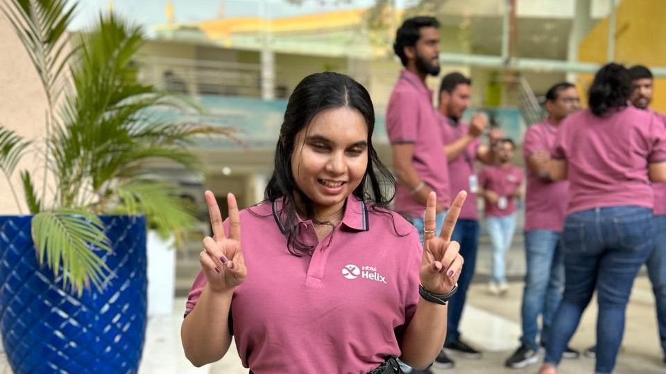
Above: That is me, after the successful launch of the product
Design Process — How were the challenges addressed?

Design System — How was consistency maintained throughout?
Below is the glimpse of how the design system was created on Figma to maintain consistency:
- Color Palette: Color psychology was applied from the healthcare perspective.
- Messages: When data is heavy, the messages should give the user the highlight.
- Spacing: Spacing didn't just make the designs cleaner but helped the dev team code better.
- Components: Created states which made it easier for different scenarios.
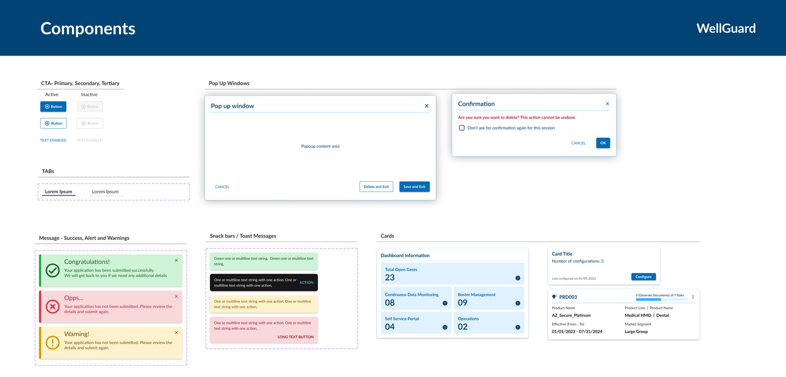
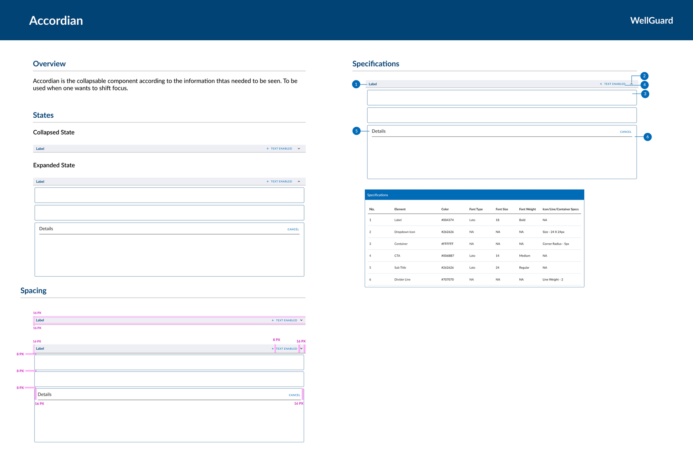
Prototype — How did the ideation turn out?
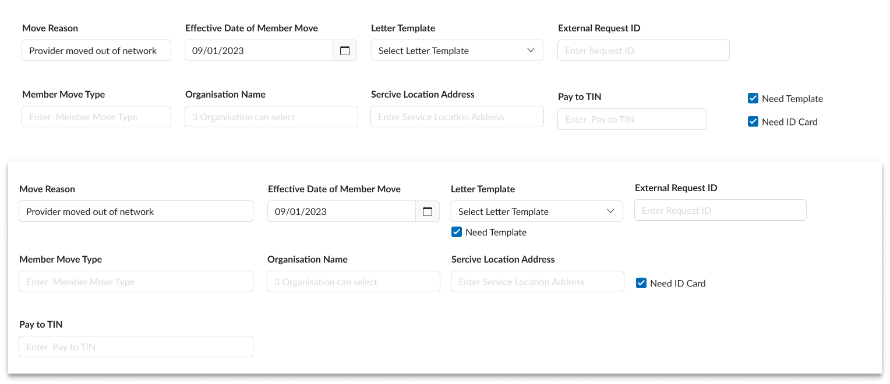
Responsive Designs: As the product was going to cater to a new audience with various types of devices, breakpoints were introduced in the designs.
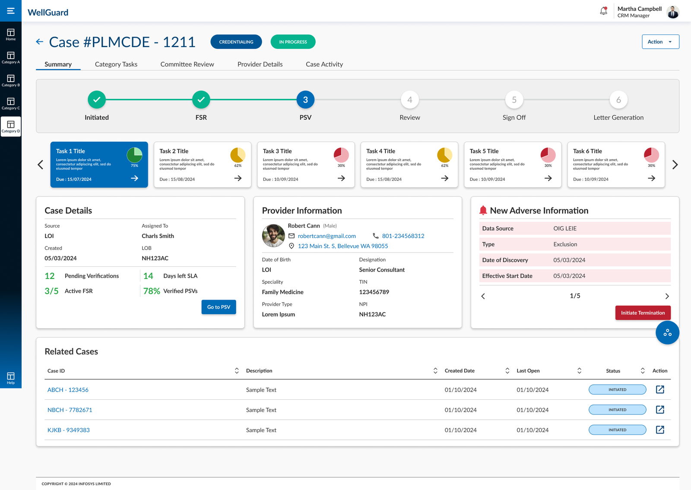
Above: for 1920×1080
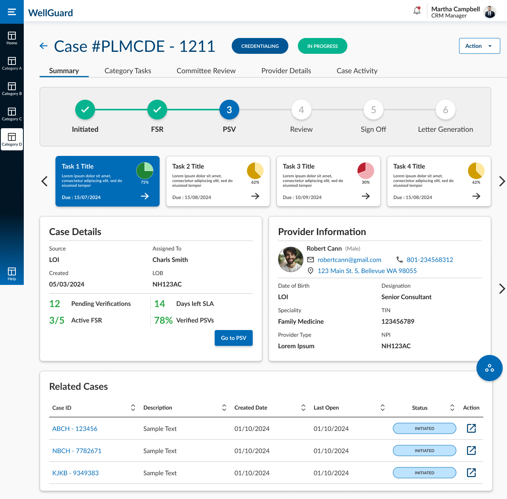
Above: for 1280×720
Outcome — How was the collaboration with the POs and dev team?
- Continuous Communication: Always in the loop with both teams, understanding their restrictions and possibilities.
- Documentation: JIRA was used to document the entire process, to know exactly which stage the product was at.
- Challenges & Solutions: During the initial stages there were some issues around creating a smooth experience and shared understanding — after a few workshops, all teams were aligned.
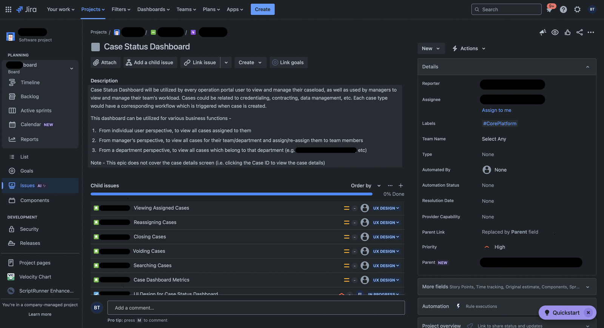
Above: Reference for JIRA usage
Outcome — How was the interaction with the stakeholders?
- Feedback Loop: Once demos were done, the client would send feedback, which was analyzed and applied as needed.
- Client Traction: A 30% increase in client traction, across clients from California, New Mexico, and Utah.
- Client Satisfaction: Clients were satisfied and continued to trust and use the product.
Outcome — What was the improvement in the product?
Lessons - What I'd Carry Into the Next Project?
- Cadence over convenience: Client check-ins happened when questions came up rather than on a fixed rhythm. In hindsight, a standing weekly sync would have surfaced misalignment earlier and made feedback loops predictable instead of reactive.
- Bring engineering in at the concept stage, not the handoff stage: Looping the dev team in only once designs were fairly settled meant some technical constraints surfaced late, forcing rework that a five-minute conversation earlier on would have avoided.
Stakeholder Research — How was the approach with stakeholders?
Objective
The objective of the stakeholder discussions and interviews was to align with key expectations, gather requirements, and address challenges in reducing administrative burdens on providers and streamlining the HR-managed provider onboarding process.
Stakeholders Involved
- Product Owners: Provided insights into business goals, the need to streamline healthcare processes, and key performance indicators.
- HR Teams: Discussed technical requirements for integration with existing systems and the challenges of the lengthy provider onboarding process.
Focus Areas
Project Goals & Objectives — aligning design and development with business goals
Pain Points — lengthy onboarding (up to 3 months) impacting efficiency
Requirements Gathering — seamless integration and reduced onboarding time
Collaboration Preferences — effective channels between dev and HR teams
Insight from the Stakeholders
- HR Teams: Stressed the urgency of reducing provider onboarding time, which was hindering the organization's ability to respond quickly to staffing needs.
User Research — What were the pain points faced by providers?
Shared firsthand experiences about the time-consuming nature of administrative tasks and the impact on patient care.
Sample size: 30 providers
Analytics
Navigating US Healthcare Terminology
Given the complexity of US healthcare terms, a glossary was created for reference and understanding. This glossary:
- Facilitated Understanding: Helped the team quickly grasp and apply complex terms throughout the project.
- Assisted Team Members: Provided a valuable resource for new team members, ensuring consistency and reducing the learning curve.
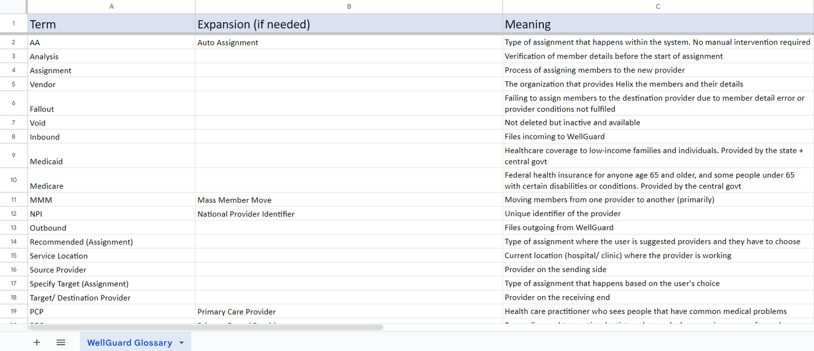
Ideation — How did the ideation process start?
Keeping in mind the aim and user behavior, a couple of ideations for features depending on the hierarchy were created.
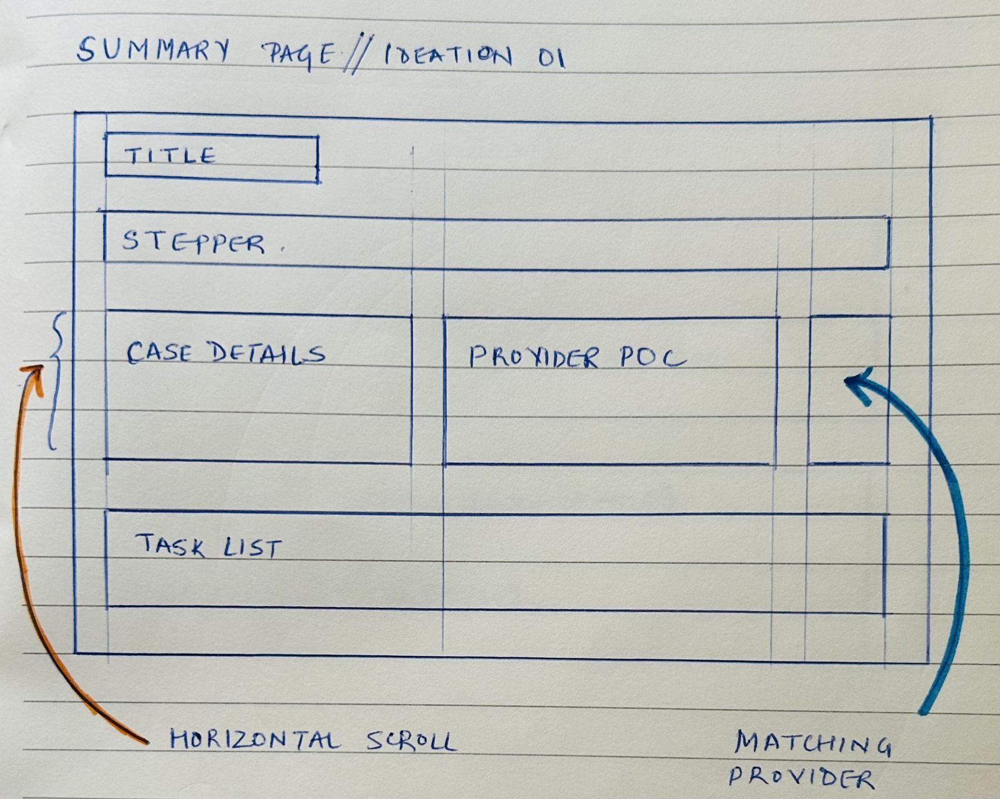
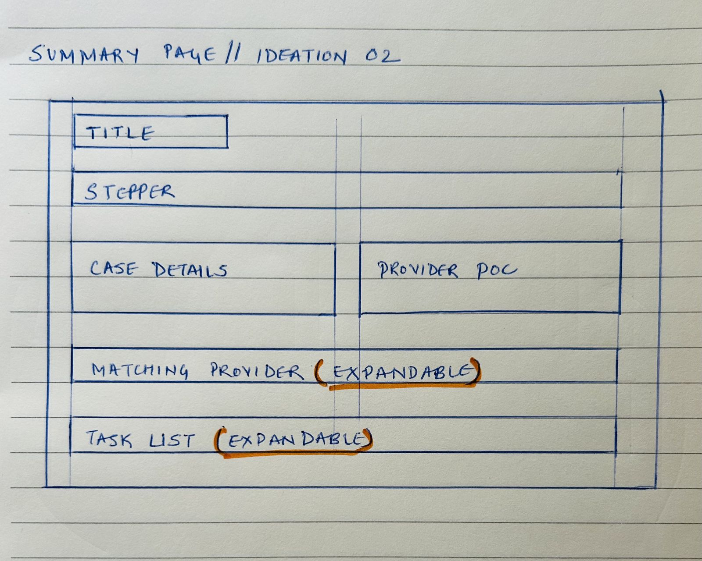
User Flows — How was the user's actions demonstrated?
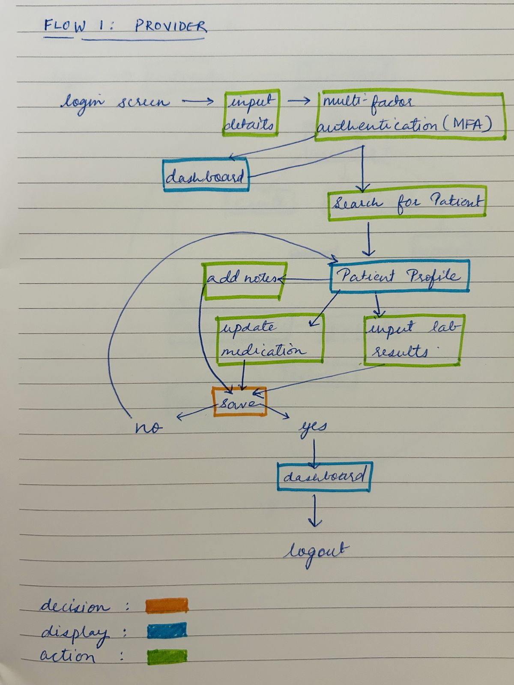
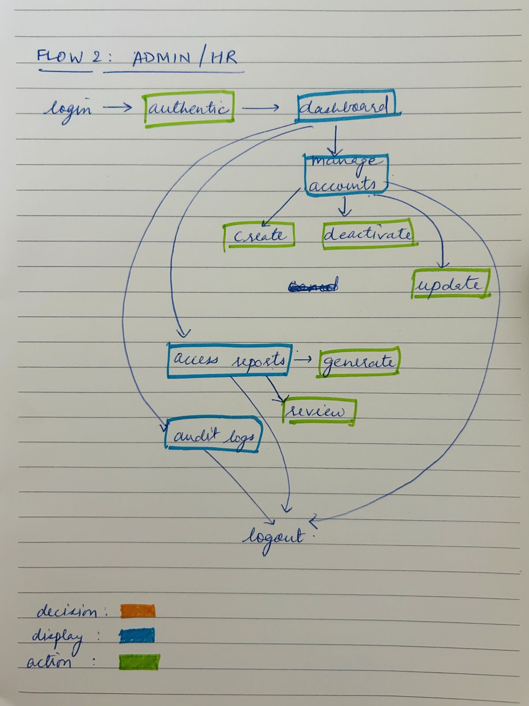